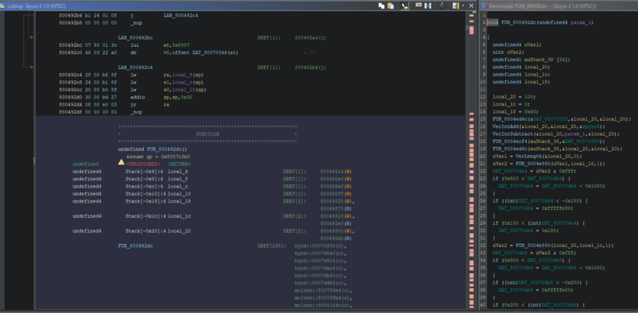

Projects
A selection of technical and creative projects demonstrating my interests in automation, data analysis, reverse engineering, and web development.
Speedrun Trick Tracker Visualizer, Graphic Displayer & Automation
Python, Tkinter, LiveSplit, OBS WebSocket
Developed a custom application to track speedrun trick attempts across multiple games. The tool supports hotkey-based input, LiveSplit integration, and automated OBS animations based on success or failure outcomes.


Mock PlayStation 1 Website
HTML, CSS, Retro UI Design
Designed a mock website inspired by the original PlayStation 1 aesthetic. Emphasized period-accurate design, layout constraints, and visual elements to recreate the feel of late-1990s console-era web content.
View Mock PlayStation 1 WebsiteLiveSplit & OBS Automation Tools for Trick Recording
Python, OBS WebSocket, Excel Automation
Built automation scripts to synchronize speedrun data with OBS visuals and generate Excel reports for post-run analysis. Reduced manual tracking and improved consistency during live broadcasts.

PlayStation 1 Code Analysis & Reverse Engineering
MIPS Assembly, Hex Editing, Emulation Tools
Analyzed and modified PlayStation 1 game code to understand mechanics, memory behavior, and engine limitations.
Twitch Interactive Quiz Game
Python, Twitch API, GUI Development
Created a Twitch chat-based quiz game where viewers identify speedrunning maps from images.

Trick Success Rate Pie Chart Animator
Python, Excel Automation, Matplotlib
Analyzed Excel files for trick success rates and animated progress over time with detailed statistics.